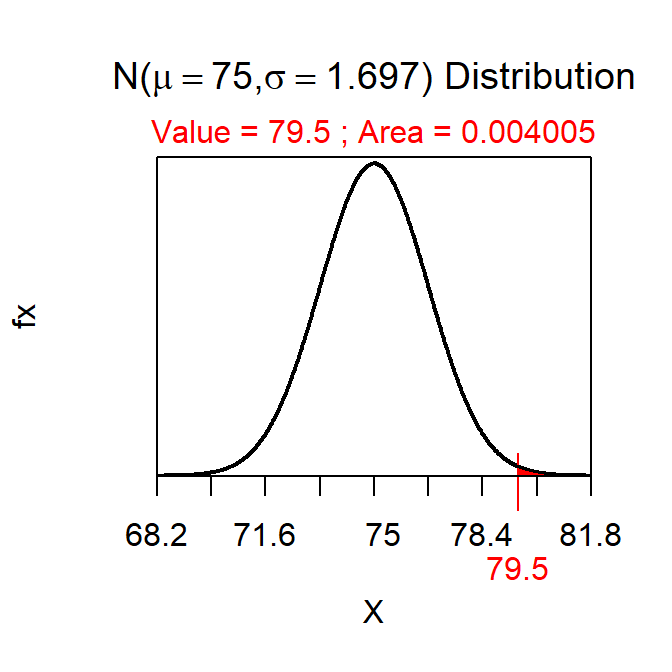
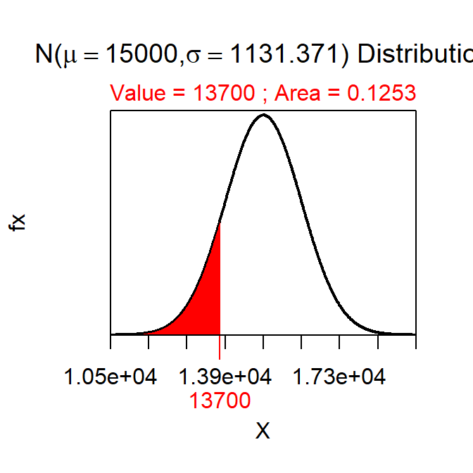
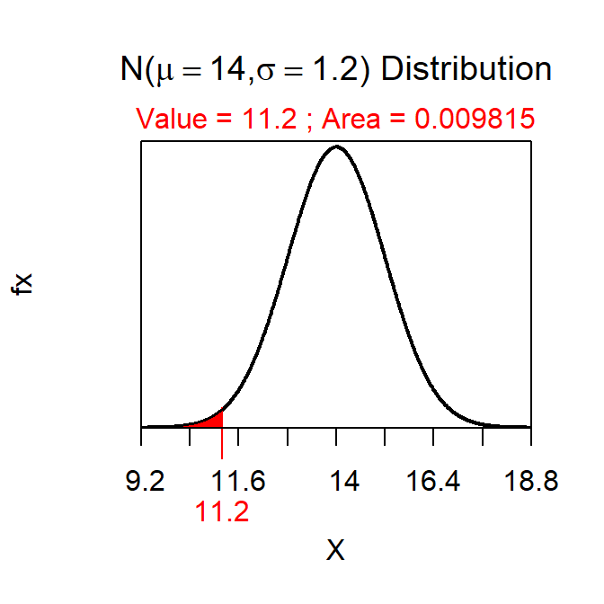

P-Value Calculations and Decisions I
Note:
-
When writing the definition of the p-value in the context of the problem you are replacing “the observed statistic” with the value of x̄; “more extreme” with “less”, “greater”, or “different” depending on the sign in HA; and the “null hypothesis is true” with the value of μ in “the probability of the observed statistic or a value more extreme assuming the null hypothesis is true.”
-
The p-value is “the probability of observing a sample mean of 79.5 or greater if the population mean is 75.” Reject H0 because p-value=0.0040<α (Figure 1).

Figure 1: Normal distribution representing the p-value calculation for the first example.
-
The p-value is “the probability of observing a sample mean of 13700 or less if the population mean is 15000.” Do not reject H0 because p-value=0.1253>α (Figure 2).

Figure 2: Normal distribution representing the p-value calculation for the second example.
-
The p-value is “the probability of observing a sample mean of 11.2 or ‘different’ if the population mean is 14.” Reject H0 because p-value=0.0196<α (Figure 3).

Figure 3: Normal distribution representing the p-value calculation for the third example.
R Appendix.
distrib(79.5,mean=75,sd=12/sqrt(50),lower.tail=FALSE)
distrib(13700,mean=15000,sd=8000/sqrt(50))
2*distrib(11.2,mean=14,sd=6/sqrt(25))